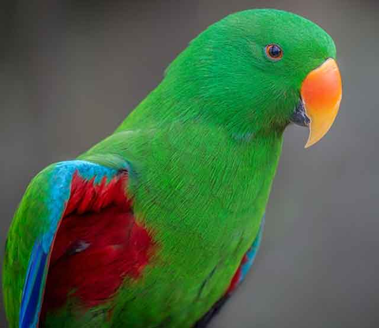

앵무새를 위한 먹이! 어떻게 준비하면 될까요?
어떤 동물이든 각자가 먹을 수 있는 먹이가 정해져 있습니다. 그래서 동물의 특성을 이해하고 먹여도 되는 음식과 먹이면 안 되는 음식을 구분할 필요가 있습니다. 앵무새도 마찬가지입니다. 먹을 수 있는 먹이를 먹이고 영양 상태를 고려한 식단을 급여하는 게 중요하죠. 그렇다고 모든 앵무새가 다 같은 음식을 좋아하고 똑같은 것은 아닙니다. 따라서 키우는 앵무새를 지켜보며 그에 맞는 관리를 하는 것도 중요합니다. 그래서 앵무새를 위한 특별 간식, 먹이를 만드는 것도 가능한데요. 어떻게 준비하면 되는지 알아볼게요!
모든 반려동물이 그렇겠지만, 앵무새도 균형 잡힌 식단으로 건강을 관리합니다. 앵무새의 건강 상태는 깃털과 성장 과정에서 살펴볼 수 있습니다. 게다가 앵무새의 수명을 연장하고 삶의 질 자체를 높여줍니다. 만약 앵무새 건강 관리가 제대로 되지 않는다면 우울감을 느낄 수 있습니다.
앵무새 먹이는 쉽고 간편하게 사료를 통해 줄 수 있지만, 조금 더 잘 관리하기 위해서 직접 만들어 주거나 선별한 먹이로 급여할 수 있습니다.
[과일]
앵무새의 먹이로는 과일도 좋습니다. 단, 과일에는 당 성분이 많아서 적절히 조절해서 급여하는 것이 좋습니다. 만약 과일을 먹이로 주고 싶다면 당이 많은 과일은 일주일에 2~3회 조절하고 한 가지 과일로만 주기보다는 여러 과일을 돌아가며 주는 것이 좋습니다. 한 가지 먹이 먹는 것을 지겨워하고 스트레스를 받기도 합니다.
[채소]
집에서 간편식으로 먹이기는 채소도 좋습니다. 단, 어떤 먹이든 과하면 안 되죠. 상추나 시금치는 앵무새가 좋아하는 음식이기도 합니다. 브로콜리, 근대 역시 앵무새가 먹기에는 좋은 음식에 속합니다.
당근, 무, 셀러리, 아티초크, 콜리플라워 등도 앵무새가 먹기 좋은 채소에 해당합니다. 생각보다 여러 종류를 먹을 수 있는 앵무새기에 여러 가지 과일과 채소를 섞어 급여하는 것도 좋은 방법입니다.
[의외의 먹이]
앵무새가 먹을 수 있는 음식 중에는 의외의 먹이도 있습니다. 예를 들면, 파스타 면과 같은 종류이죠. 병아리콩, 렌틸콩 같은 콩 종류도 앵무새가 좋아하는 먹이입니다. 더불어 씨앗 종류도 별미로 급여하는 것이 좋습니다.
채소나 과일을 먹지만 앵무새는 육식동물입니다. 그래서 흰살생선이나 뼈가 없는 순 살 닭을 주는 것도 좋습니다.
[먹으면 안 되는 것]
앵무새도 당연히 먹어서는 안 되는 음식들이 있죠. 대표적인 예로 '설탕'이 함유된 음식입니다. 즉, 과일같이 자연스럽게 함유된 당과 달리 고도의 당이 인위적으로 들어간 음식은 안 먹으므로 먹이로 줘서는 안 됩니다. 더불어 소금기가 많은 음식 역시 앵무새에게 좋지 않으므로 지양해야 합니다. 아보카도, 파슬리, 우유 역시 앵무새에게 유해하므로 주의하시길 바랍니다.
[출처] 앵무새를 위한 먹이! 어떻게 준비하면 될까요? ｜ 작성자 코코네집